如何审计 Electron 应用代码
本文最后更新于：2 个月前
前言
最近被 XMind 2020 XSS 导致远程代码执行的漏洞所吸引，复现过程比较简单，于是想研究一下漏洞造成的原因，因为 XMind 属于 electorn 应用，应用了很多 Web 前端技术，然后就发现自己什么也看不懂。所以后面收集了很多知识，构成了这篇文章，相信看完这篇文章后，大家会对 electorn 审计会有大概的思路。
Electron的安全策略
nodeIntegration
nodeIntegration 是用来隔离不受信任的资源，如来自不受信任的远程服务器的代码在本地被执行，将会造成安全问题。
例如在默认的 BrowserWindow中显示一个远程网站。如果攻击者以某种方式设法改变所述内容 (通过直接攻击源或者通过在应用和实际目的地之间进行攻击) ，他们将能够在用户的机器上执行本地代码。
拆分下 nodeIntegration 来理解一下， node 指的是 Node.js ， integration 英文是集成的意思，在 Electron 中默认 nodeIntergration 为 False，表示禁用 Node.js 集成，这样可以有助于防止XSS攻击升级为“远程代码执行” (RCE) 攻击。
官方的指导方法如下：
1 | |
1 | |
1 | |
WebSecurity
WebSecurity 中包括同源策略的设置， WebSecurity 默认值为 True ，即打开状态。
如果禁用 WebSecurity 将会禁止同源策略并且将 allowRunningInsecureContent 属性置 true。 换句话说，这将使得来自其他站点的非安全代码被执行。
官方推荐的一些配置：
1 | |
1 | |
1 | |
nodeIntegration 绕过漏洞
历史上出现过两个 nodeIntegration 绕过漏洞，编号分别为CVE-2018-15685，CVE-2018-1000136。
CVE-2018-15685
WebPreferences Vulnerability 远程代码执行漏洞。
影响版本：3.0.0-beta.6、2.0.7、 1.8.7 、1.7.15
漏洞原理
在该漏洞版本中，创建的每个窗口都设置了以下属性：
1 | |
可以看到也禁止了 Node.js 继承，但问题在于窗口的属性无法通过嵌套窗口和iframe正确地继承，而且嵌套窗口和 iframe 中的默认设置没有禁止 Node.js 继承，所以通过嵌套窗口或者使用 iframe 就可以绕过 nodeIntegration 的限制导致远程代码执行。
漏洞复现
这里使用 vulhub 复现方便一点。
1）环境搭建
执行如下命令编译一个包含漏洞的应用：
1 | |
其中PLATFORM的值是运行该应用的操作系统，可选项有：win64、win32、mac、linux。
编译完成后，再执行如下命令，启动web服务：
1 | |
此时，访问http://your-ip:8080/cve-2018-15685.tar.gz即可下载编译好的应用。
2）复现过程
打开漏洞 electron 程序，界面如下，输入的内容会被显示在程序页面中：
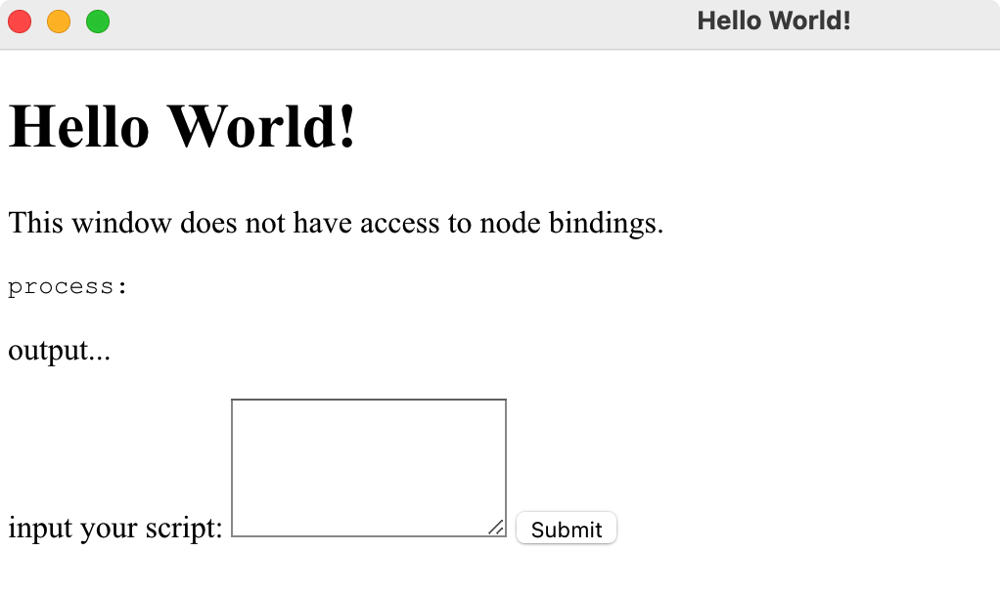简单验证发现存在 XSS 漏洞
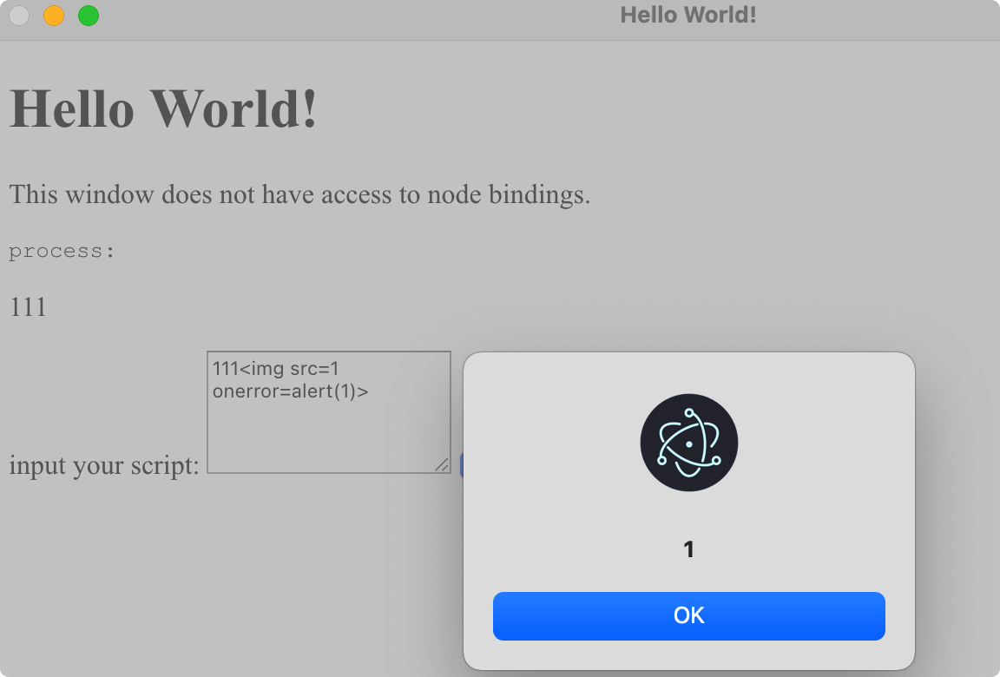构造一条命令执行，发现程序没有任何反馈，因为程序默认设置了 nodeIntegration=false
1 | |
通过 window.open().open() 其实相当于打开了一个子窗口，在子窗口下再打一个子窗口。（打开一个子窗口不够）
1 | |
效果如下：
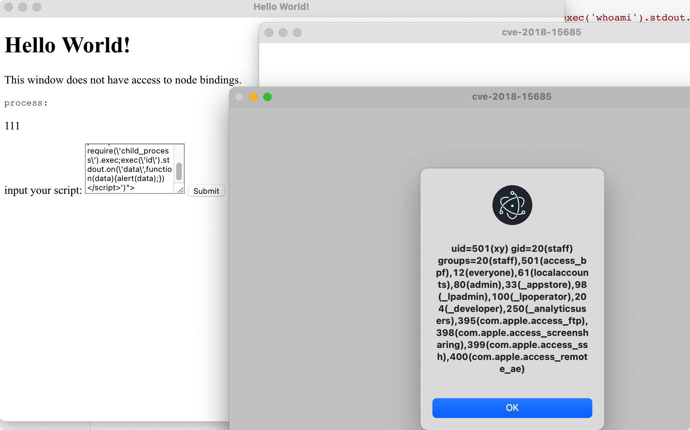漏洞修复
这时官方的修复文档： https://www.electronjs.org/blog/web-preferences-fix ，修复方案是强制将顶层windows webPreferences 应用于无限深的所有子窗口。这样再多少个 open 也没有用了😁。
CVE-2018-1000136
Electron nodeIntegration存在绕过漏洞，允许攻击者远程命令执行。漏洞编号：CVE-2018-1000136。
影响版本：Electron 版本< 1.7.13, < 1.8.4, 或 < 2.0.0-beta.3
该漏洞利用前提是 Electron 应用存在 XSS 漏洞，如果应用没有对用户的输入做安全检查或过滤就可能存在这种漏洞。通过 XSS 漏洞可以利用 webview 标签的特性将 nodeIntegration: false 传入应用 webPreferences 中，来移除对 Node.js 的访问，从而造成远程命令执行。
利用 POC
1 | |
解包
electron 应用打包为程序后源代码在 Content/Resources/app 目录下：
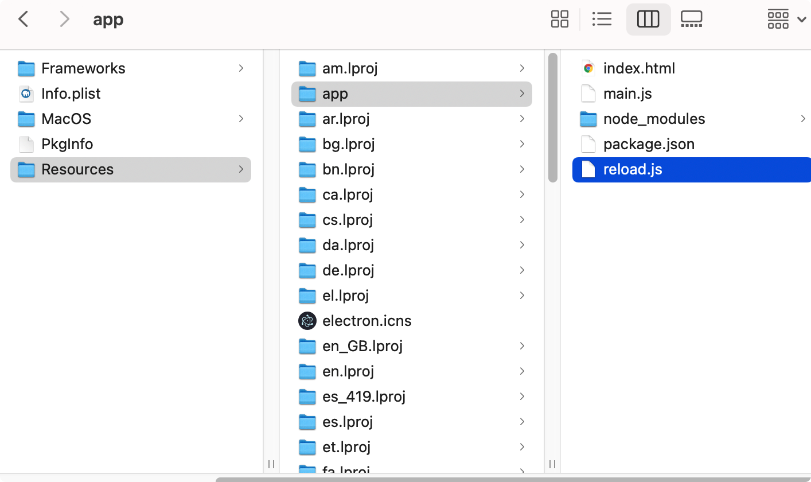Electron 还提供了一个 npm 软件包 asar 来管理这些文件，可以将源码压缩保存，后缀为 asar。我们平时下载到的 electron 应用源码基本都会用这个格式保存，下面记录下解包的方法。
1）安装好npm
新版本的Node.js中自动集成了npm，npm是JS的包管理器。在 mac 中可以使用下面的命令安装 Node.js：
1 | |
2）安装asar
1 | |
3）解包命令
以macOS平台为例，在xxx.app/Contents/Resources下找到app.asar
1 | |
这里输出目录最好固定为 app ，这样在封装时避免出错。
解包后就可以正常开始审计代码了。
如果对文件有修改后想重新封装使用如下命令：
1 | |
调试
electron有主进程和渲染进程，所以调试部分也分为两大块，即调试主进程和渲染进程。
调试渲染进程
调试渲染进程和调试浏览器的方法基本差不多。在运行electron 应用之后可以通过下面两种方式打开调试工具。
手动打开
在导航栏： View->Toogle Developer Tools
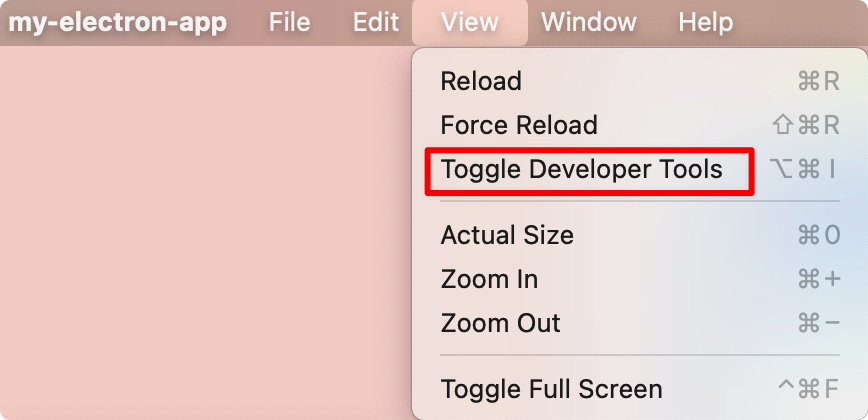但是该方法局限性比较大，很多软件并不会把调试工具放在导航栏中。
代码打开
在主进程(一般默认的就是main.js)中使用 const mainWindow = new BrowserWindow 实例化窗口的时候，加上如下一句功能代码：
1 | |
一定要注意添加的位置：
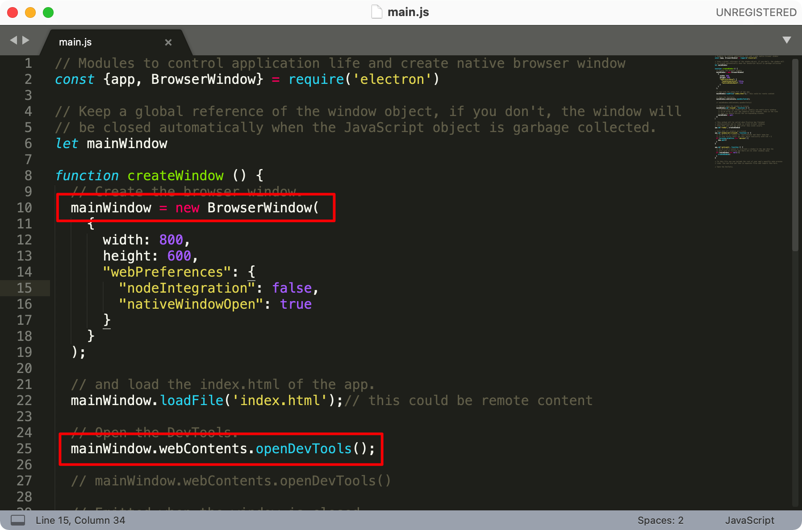其中 openDevTools 可以接受一个参数，这个参数是个配置对象，一般会根据自己开发习惯在里面配置控制台打开的方向。当然也可以在控制台打开之后自己调整。
1 | |
最终效果如下：
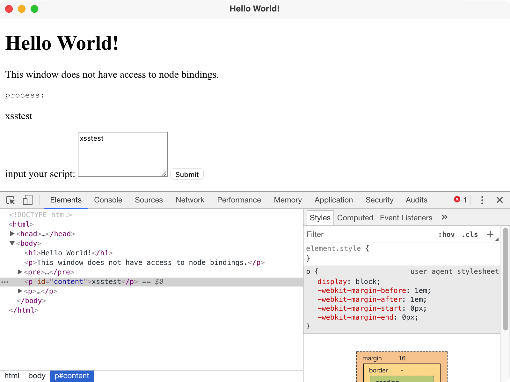可以发现的是在调试渲染进程时是找不到 js 文件的。（谷歌调试找文件的快捷键：cmd+p）
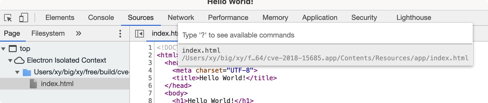调试主进程
1）使用 --inspect=[port] 来设置一个运行端口，比如在 package.json 中配置如下脚本
1 | |
然后在目录下进入终端输入： npm run start。
2）浏览器输入： chrome://inspect，点击下方 inspect
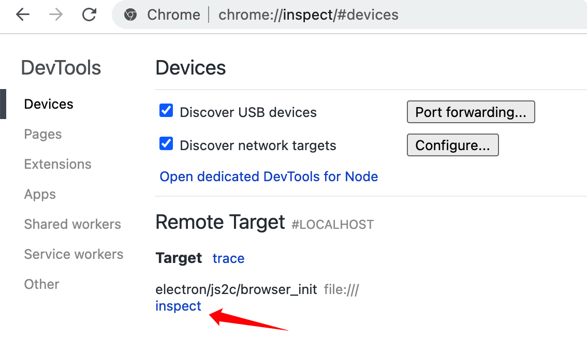可以发现调试的全是 js 文件：
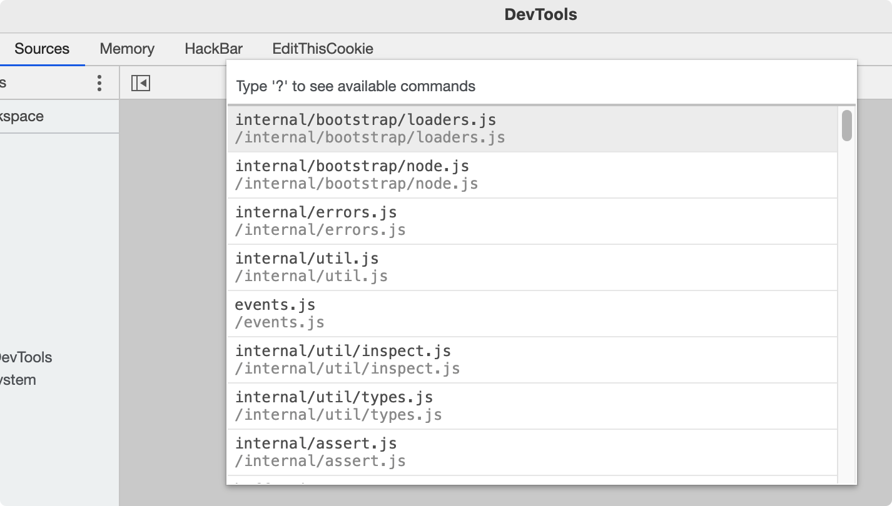生产环境调试
在上面看到调试 electron 还是比较麻烦的，这里推荐一个软件 debugtron 。
首先 debugtron 就会展示系统中已经安装的 electron 软件，可以看到我们日常使用的很多软件都是 electron，对于没有检测出来的 electron 软件，直接将软件拖入 debugtron 也可以了。
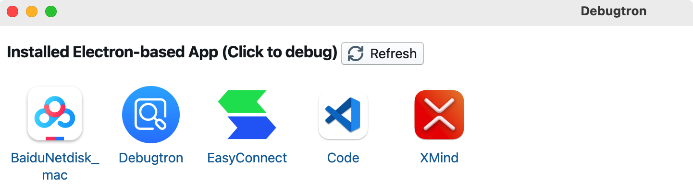这里简单看下使用方法，我把测试软件拖入 electron 后，程序会被自动打开，面板左侧会显示可调试的会话列表，包括主进程和渲染进程，可以根据标签来区分。右侧会显示主进程启动的日志：

查看版本的命令：process.versions
参考：
Electron的安全策略，参考官方文档：https://www.bookstack.cn/read/electron-10-zh/tutorial-security.md
CVE-2018-15685参考：https://www.contrastsecurity.com/security-influencers/cve-2018-15685、
electron 代码审计：https://www.cnblogs.com/Mang0/p/13269450.html、https://xz.aliyun.com/t/6998#toc-2
debugtron：https://github.com/bytedance/debugtron
本博客所有文章除特别声明外，均采用 CC BY-SA 4.0 协议 ，转载请注明出处！